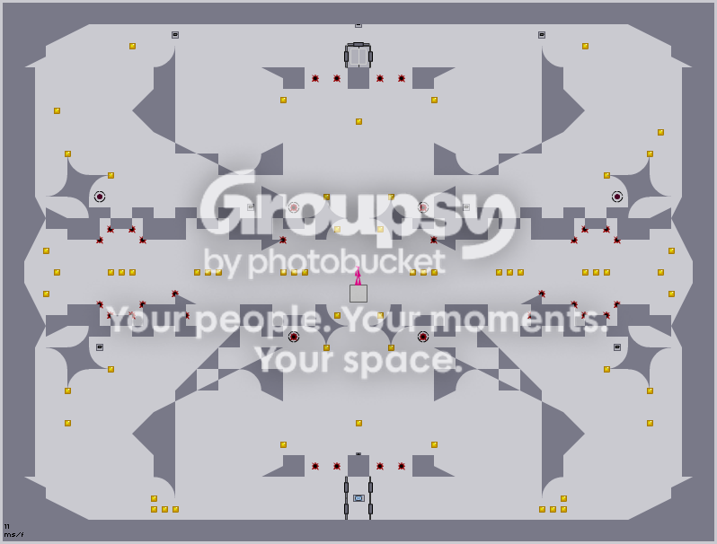

hmm as usual what i do with forums, if this is the wrong place then sorry lol..
(it happens to me alot )
)
anyway. well i recently made a map that id really like to show but i mean just to see if its "getting there" and know if it just might turn out into something good like one of those L33t levels all over the place
heres a pic and im going to post up the map data when i decide to when i feel its done 
(it happens to me alot
)anyway. well i recently made a map that id really like to show but i mean just to see if its "getting there" and know if it just might turn out into something good like one of those L33t levels all over the place
heres a pic
and im going to post up the map data when i decide to when i feel its done 

 btw i made the pics myself
btw i made the pics myself 
 )
) , hey look at my body its glitchin in that wall
, hey look at my body its glitchin in that wall